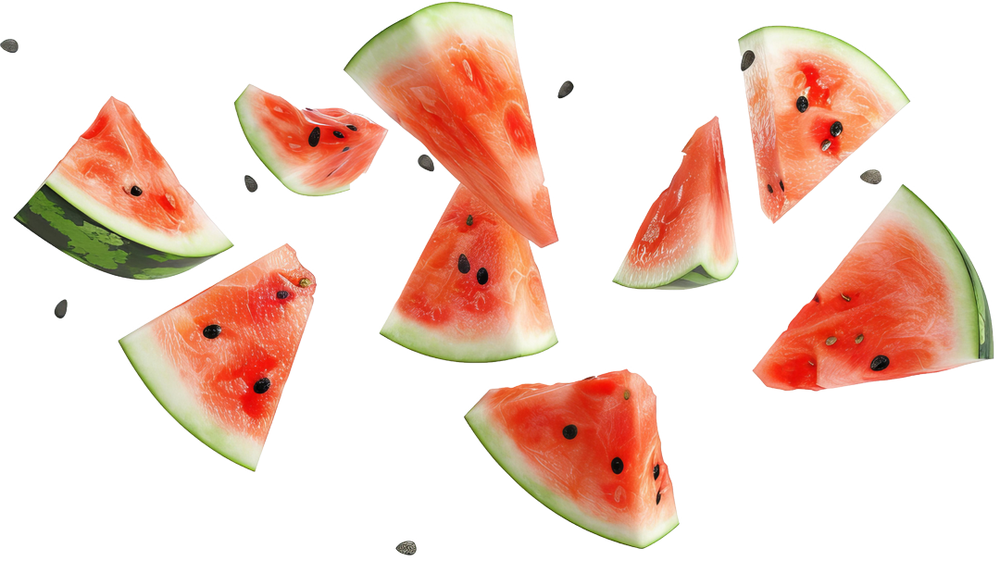

Fruits are one of nature’s most powerful sources of nutrients, offering a wide range of health benefits through their vitamins, minerals, and antioxidants. Rich in Vitamin C, oranges, strawberries, and kiwis help strengthen the immune system, promoting faster healing and reducing the risk of chronic illnesses. Bananas, avocados, and citrus fruits provide an excellent source of potassium, which supports heart health by regulating blood pressure and reducing the risk of stroke. Each fruit delivers its own unique set of nutrients, making them an essential part of a well-balanced diet.
In addition to supporting immunity and heart health, fruits are also a great source of dietary fiber. Apples, pears, and berries are high in fiber, which aids digestion, prevents constipation, and helps maintain a healthy gut. There was truth in what our parents told us, "An apple a day keeps the doctor away."

Join one of our Healthy Fruit Subscription Plans to fit your lifestyle and health goals!"
